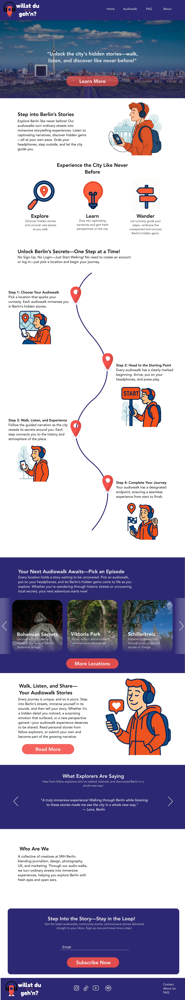
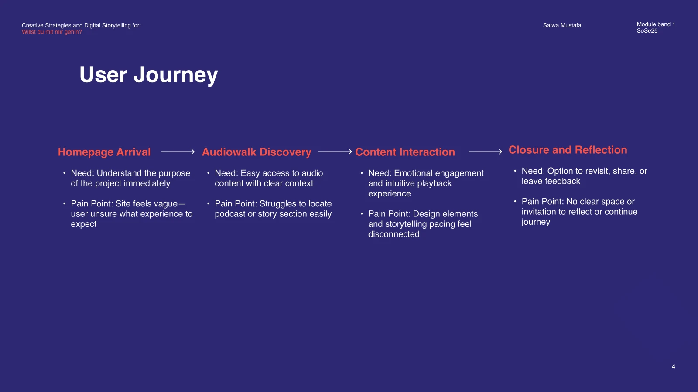
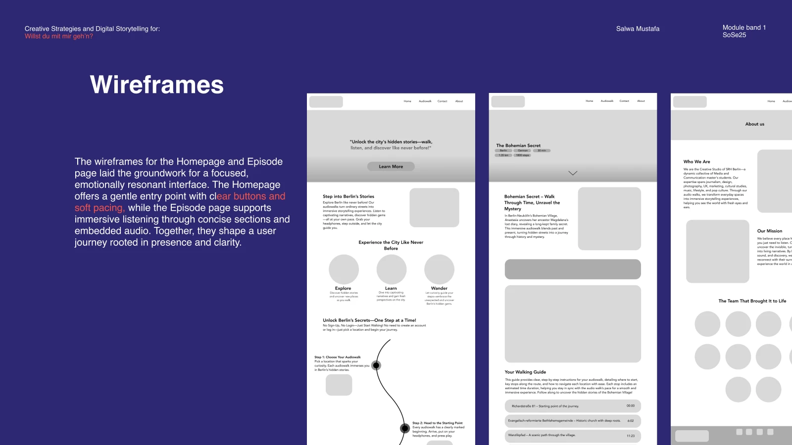
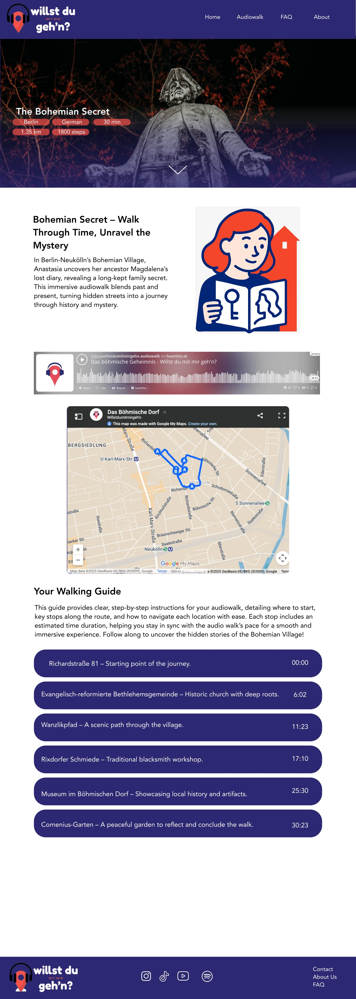

Discover a story
Episode previews introduce the experience before listening.
Creative Strategies & Digital Storytelling
An audiowalk website that guides people from discovering a Berlin story to listening along the route.

01 · THE CHALLENGE
The existing experience did not make the purpose or route to the audio clear enough. The challenge was to combine practical guidance with the atmosphere of a self-paced story, within WordPress constraints.
PROJECT GOALHelp visitors understand the audiowalk, choose a story, and start listening with confidence.
02 · UNDERSTANDING

An external-user walkthrough and a real walking route informed the research. The journey highlighted unclear context on arrival and difficulty locating the audio content.
03 · EXPLORATION

The concept shifted from group interaction toward solo listening. Storyboarding, wireframes, a revised logo, and a blue-and-red visual direction supported that change.
04 · FINAL SOLUTION

Episode previews introduce the experience before listening.
Stops and time markers support navigation along the walk.
The visual direction supports calm, individual exploration.
EXPLORE THE DESIGN
View the original project screens and available interactions.
Open in Figma ↗WANT THE DETAILS?
Explore the original university presentation and supporting process.
View presentation ↗05 · REFLECTION
The project includes a WordPress landing page and desktop/mobile design work. It brings practical route details and storytelling into a clearer sequence, with refinements informed by feedback.